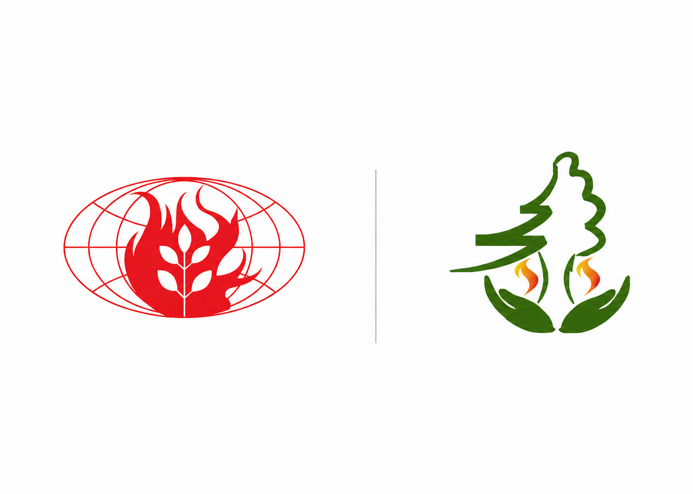

NFMC hosts Regional South Asia FMRC 13 April 2024 · RSAFMRCA region of the Global Wildland Fire Network
Enhancing regional cooperation for safer landscapes across South Asia.
RSAFMRC supports the Regional South Asia Wildland Fire Network (RSAWFN), which exists to enhance and strengthen bilateral, multilateral, and international cooperation in wildland fire management — creating synergies and sharing knowledge, technical, and human resources between countries in the region.
Member countries
- Bangladesh
- Bhutan
- India
- Nepal — convening country
- Pakistan
- Sri Lanka
Featured stories
Milestones from the network's history
About RSAFMRC
A regional platform for resilient landscapes, informed response, and shared expertise.
The Regional South Asia Wildland Fire Network was founded at a meeting in Kathmandu, Nepal, on 2–3 April 2007, bringing together Bangladesh, Bhutan, India, Nepal, and Sri Lanka with the Global Fire Monitoring Center (GFMC). It is one of the regional networks under the UNISDR Global Wildland Fire Network, coordinated by GFMC since 2002.
Since 2009 the network has also formed part of the wider Pan-Asia Wildland Fire Network, alongside the Northeast Asia, Central Asia, and Southeast Asia (ASEAN) regional networks.
Mission
To facilitate the enhancement of local, national, and regional fire management capabilities by creating synergies between scientists, managers, and policy makers — reducing the devastating effects of wildfires on property, resources, health, and the environment.
Structured activities
What the network coordinates
Wildland Fire Early Warning
Regional and national-level early warning systems to enable prompt fire detection and response.
Wildland Fire Monitoring
Fire monitoring linked with the GOFC/GOLD Regional Fire Implementation Team.
Wildland Fire Capacity Building
A Regional Training Center, run as a joint venture with GFMC, for field practice and professional development.
Wildland Fire Policy and Legislation
Support for national fire management policies, strategies, and improved legal frameworks.
Resources
Vision, mission, and goals
- Long-term goals: national policy support, sustainable regional cooperation, network strengthening
- Mid-term goals: dialogue between governments, NGOs, and stakeholders
- 16 specific objectives spanning policy, early warning, research, and capacity building
- The Political Dimension of regional cooperation, at national, regional, and international level
- Meeting reports, including the Kathmandu Declaration
Site sections
- About RSAFMRC
- Vision, mission and objectives
- Structured activities
- Resources and publications
- News and events
- Contact and collaboration
Latest updates
Network history and highlights
Foundation meeting held in Kathmandu
2–3 April 2007 — Bangladesh, Bhutan, India, Nepal, Sri Lanka, and GFMC met in Kathmandu to found the network.
NFMC hosts Regional South Asia FMRC
On 13 April 2024, GFMC and NFMC signed an agreement for NFMC to host the Regional South Asia Fire Management Resource Center.
Joined the Pan-Asia Wildland Fire Network
February 2009, Busan, Republic of Korea — the network joined three others covering Northeast, Central, and Southeast Asia.
Collaboration
A stronger regional fire management network, built together.
RSAFMRC brings together the national fire management institutions of Bangladesh, Bhutan, India, Nepal, and Sri Lanka to strengthen bilateral, multilateral, and international cooperation in wildland fire management across the region.
Ways to get involved
- Serve as a national focal point institution
- Contribute technical expertise and regional fire data
- Partner with GFMC on training and knowledge exchange
- Take part in regional dialogue and network meetings